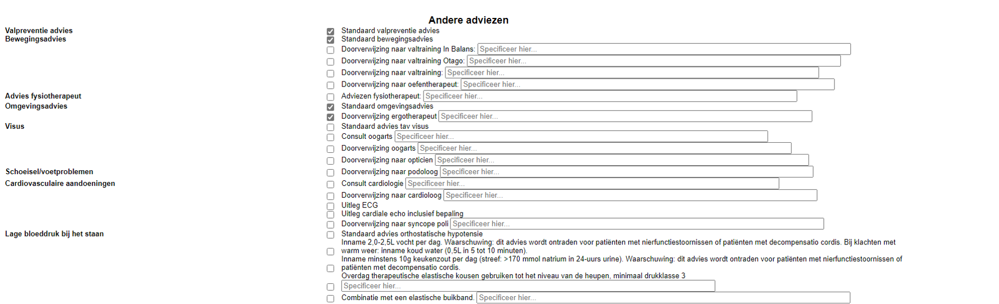
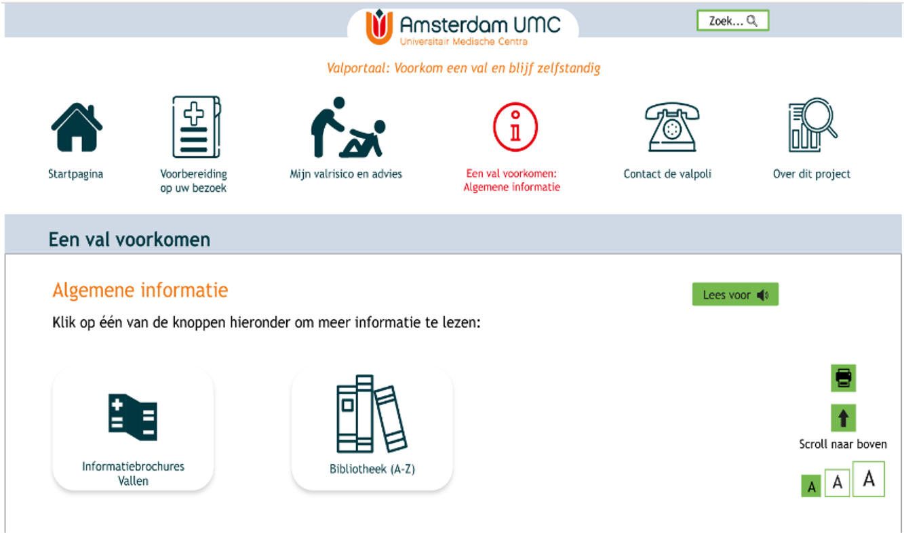
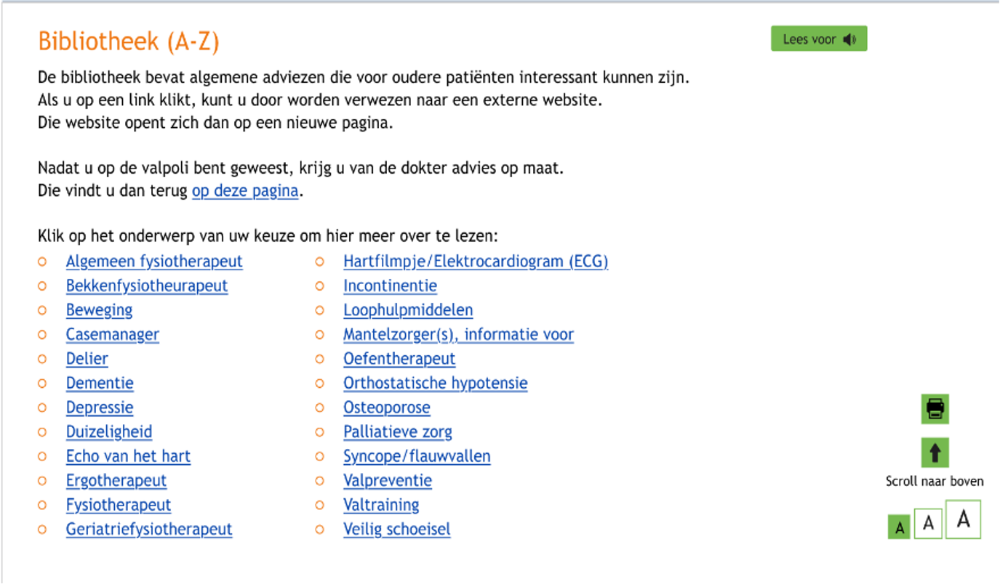
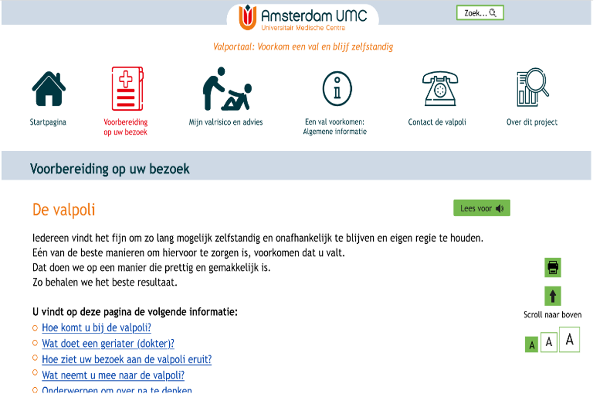
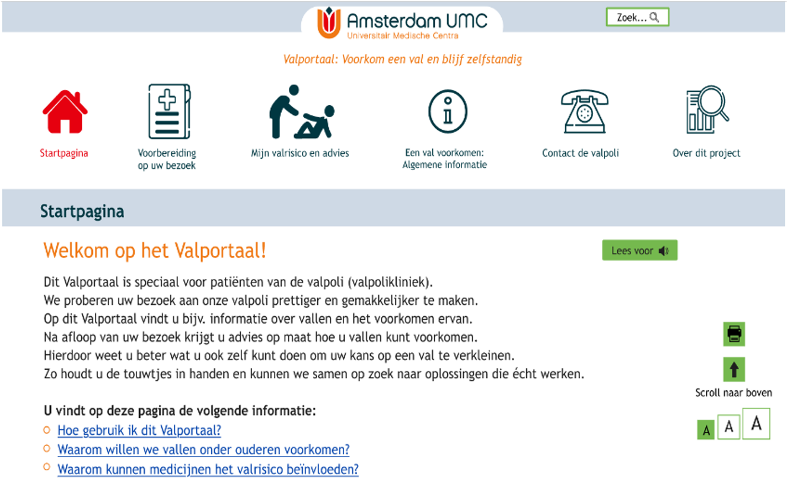

Inhoudsopgave
De ADFICE_IT Beslissingsondersteuning is te bereiken vanuit de EPD-omgeving. Het systeem haalt dus alle benodigde gegevens uit het EPD. Hiermee berekent het systeem bijvoorbeeld het valrisico en de adviezen.
Goed om te weten: het EPD heeft een eenrichtingsverbinding met de ADFICE_IT Beslissingsondersteuning. Er gaat dus alléén informatie van het EPD naar de ADFICE_IT Beslissingsondersteuning - en niet andersom.
Bovenaan het scherm vindt u aan de linkerkant de patiëntinformatie met de gegevens waar u de patiënt aan kunt herkennen, zoals naam en geboortedatum. Daarnaast vindt u bovenaan het scherm de knop Handleiding
. Als u hierop klikt, komt u op deze pagina terecht.
Onderaan het scherm vindt u de navigatiebalk. De ADFICE_IT Beslissingsondersteuning kent 5 weergaven: 1) Start, 2) Voorbereiding, 3) Consult, 4) Advies, en 5) Afronden. U selecteert één van deze weergaven door op de desbetreffende knop te klikken. Met de knop Naar boven
scrollt de pagina automatisch naar boven.
Onder de patiëntinformatie vindt u het valrisico van de patiënt. De valkans (in procenten) is in het rood, oranje of groen gekleurd en gevisualiseerd op de balk door middel van een streep. De kleur van de balk geeft de ernst van het valrisico weer. Wilt u meer weten over hoe het valrisico berekend is? Klik dan op de link Lees meer over het predictiemodel
.
Onder het valrisico vindt u de data uit het EPD. Deze controleert u op juistheid en volledigheid. Het is belangrijk om deze gegevens te controleren, aangezien dit een veiligheidscheck is of alle relevante gegevens van de patiënt wel goed opgehaald worden vanuit het EPD. Mocht dit namelijk niet het geval zijn kan dit de adviezen beïnvloeden. Indien nodig, vult u de juiste gegevens aan in het EPD en klikt u op vernieuwen
.
Let op: als u op deze knop klikt, dan verwijdert u eerder gemaakte selecties. Voer de controle daarom altijd als eerste stap uit!
De data waar het om gaat is: 1) Gedecteerde relevante aandoeningen, zoals hypertensie en delier, 2) Lab-waarden, zoals natrium en kalium, 3) Alle relevante medicijnen (FRIDs) en andere medicijnen die de patiënt gebruikt.

Onder de in het EPD gedecteerde waardes, vindt u de data die we voor het predictiemodel van het valrisico gebruiken. De ADFICE_IT Beslissingsondersteuning haalt waarden uit het EPD om het valrisico te berekenen. Als de ADFICE_IT Beslissingsondersteuning aangeeft dat er geen predictie van het valrisico mogelijk is vanwege ontbrekende waarden, dan zijn deze in rood aangegeven. Deze kunt u dan zelf handmatig invoeren.

Het overzicht Gezamenlijk besluitvormingsmodel om betrokkenheid te stimuleren
geeft een overzicht van het gezamenlijk besluitvormingsmodel weer, zoals we deze in module 3 hebben doorgenomen. Klik op de hyperlink lees meer
om naar het wetenschappelijke artikel te gaan.
U gaat verder in het scherm Voorbereiding
. U gebruikt deze weergave vaak tijdens het MDO, maar in ieder geval vóór het eindgesprek met de patiënt.
In de voorbereidingsweergave vindt u boven in de grijze balk ook weer de patiëntinformatie en het valrisico. Onder het valrisico vindt u directe hyperlinks naar medicijnen met adviezen en andere adviezen. Klik op een hyperlink om direct naar het desbetreffende onderwerp te gaan.
Goed om te weten: de ADFICE_IT Beslissingsondersteuning toont alleen de medicijnen die ons systeem uit het EPD kan halen. Het is daarom belangrijk dat u in het vorige scherm goed controleert of de juiste medicijnen gedetecteerd zijn.
Onder het kopje Medicatiefactoren
vindt u eerst de medicatie met aanbevolen maatregelen. Wilt u meer informatie over een medicijn? Naast de medicatienaam kan er via de knop FK
doorgeklikt worden naar de website van het Farmacotherapeutisch Kompas. Onder de medicijnnaam, in de groene box, vindt u het advies. De bron(nen) van deze aanbevelingen staan rechts boven aangegeven als cijfers. U kunt hier op klikken als u de bron van het advies wilt weten.
Voor elke medicatie- of overige factor, zijn vaak meerdere maatregelen mogelijk. Sommige maatregelen zijn alvast aangekruist: in dat geval worden deze wetenschappelijk aanbevolen. Dit betekent niet dat u daarvan niet mag afwijken. U kunt bijvoorbeeld, in samenspraak met de patiënt, kiezen voor een andere optie. Als u dit wilt wijzigen, (de)selecteert u de maatregelen die u van toepassing vindt op de patiënt.
In de ADFICE_IT Beslissingsondersteuning vindt u vaak vrije tekstvelden. Hier kunt u zelf tekst invullen. Bijvoorbeeld wanneer u aan de patiënt wilt meegeven dat zij alleen temazepam hoeven in te nemen wanneer dit nodig is en niet meer dan eenmaal per week.
Let op: Deze tekst wordt één-op-één overgenomen naar de adviestekst voor de patiënt. Vul hier dus geen opmerkingen in die bestemd zijn voor uzelf of collegas.
Ook goed om te weten: als een valrisicoverhogend medicijn geen advies lijkt te hebben, dan betekent dit dat de ADFICE_IT Beslissingsondersteuning het medicijn niet kan identificeren. Indien dat het geval is neem dan contact met ons op, zodat dit bijgehouden kan worden.
Stel dat u advies wilt geven over een medicijn dat niet in de ADFICE_IT Beslissingsondersteuning getoond wordt. U wilt bijvoorbeeld de patiënt vitamine D voorschrijven. Deze kunt u dan invullen onder Ander medicatie-gerelateerd advies
. U vinkt dan het selectiehokje aan en noteert de medicatienaam en startdatum. Hetzelfde kunt u doen voor het stoppen van medicijnen of voor andere acties. Let erop dat ook deze informatie één-op-één wordt overgenomen naar het patiëntenadvies.
Tot slot kunt u andere adviezen selecteren. Ook hier vindt u vrije tekstvelden, welke één-op-één worden overgenomen naar het patiëntvriendelijk advies.
Heeft u voor alle medicatie- en overige factoren één of meer maatregelen geselecteerd? Dan selecteert u in de navigatiebalk de Consult
weergave. U gebruikt dit scherm tijdens het eindgesprek met de patiënt.
De consult
weergave is hetzelfde scherm als de voorbereiding
, maar minus de adviezen en de niet-geselecteerde maatregelen. Dit scherm is daarom korter en gebruiksvriendelijker. Samen met de patiënt kunt u gemakkelijk de verschillende medicatie- en overige factoren en bijbehorende maatregelen doorlopen. Besluit u samen met de patiënt om veranderingen in de maatregelen aan te brengen? Dan de-selecteert u gemakkelijk het selectiehokje.
Vervolgens gaat u naar de Advies
weergave. Deze toont het patiëntvriendelijke advies zoals deze ook in het Valportaal getoond zal worden.
Met de Print deze pagina
knop print u het advies uit, zodat u deze aan de patiënt als hand-out mee kunt geven. Herinner de patiënt er ook aan dat het advies in het Valportaal te vinden is. Ook is het advies te kopiëren.
Tot slot rond u het proces af via Afronden
.
Als u op de Kopieer tekst
knop klikt, kopieert u een samenvatting van de maatregelen en adviezen naar het klembord van de computer. U kunt deze dan gemakkelijk in het EPD plakken, zodat u niet alles hoeft uit te typen.
Vervolgens klikt u op de knop Verstuur & vergrendelen
. Hiermee worden alle aangevinkte adviezen doorgestuurd naar het valportaal van de patiënten. Wees er dan dus wel op bedacht dat aanpassingen in het systeem dan niet meer mogelijk zijn. Ook stuurt u hiermee uw gemaakte keuzes naar onze onderzoeksdatabase. Voor het onderzoek is dit daarom de belangrijkste stap!
Zoals u weet, bestaat de ADFICE_IT interventie uit twee delen: de beslissingsondersteuning voor u, de artsen, en een patiëntenportaal voor de patiënten. Dit portaal noemen we het Valportaal. De patiënten krijgen voordat zij naar de valpoli komen toegang tot het Valportaal. Hier wordt hen informatie geboden over vallen en valpreventie, zodat zij zich op het consult met u kunnen voorbereiden.
Zo biedt het Valportaal bijvoorbeeld informatie in de vorm van te downloaden informatiebrochures en een bibliotheek.
De bibliotheek bevat algemene adviezen die voor oudere patiënten interessant kunnen zijn.
Ook biedt het Valportaal de patiënten praktische informatie over het bezoek aan de valpoli, zodat zij zich hierop kunnen voorbereiden.
Eerder in deze training is u verteld dat wanneer u op de Verstuur & vergrendel
knop klikt, dit de gemaakte behandelkeuzes naar het Valportaal stuurt. Dat ziet er als volgt uit.
U ziet dat dit exact dezelfde informatie is als in de adviesweergave van de beslissingsondersteuning.
Let op: deze informatie is dus pas zichtbaar voor de patiënt nadat zij bij u op consult zijn geweest.
Tot slot biedt het Valportaal ook een overzicht van de contactgegevens van de poli en informatie over dit project. U kunt een demo van het Valportaal hier zelf bezoeken.
Ervaart u technische problemen tijdens het werken met de ADFICE_IT Beslissingsondersteuning? Of heeft u andere vragen?
Neem dan vooral contact met ons op! U kunt ons direct bereiken door ons op de mobiele studietelefoon te bellen op O6 - l5 377 O82.
Wilt u liever een mail sturen? Ook dat is mogelijk. Stuur uw bericht naar adfice-it@amsterdamumc.nl.
Tot slot heeft onze onderzoekslijn ook een eigen website. Hier vindt u de laatste nieuwtjes en meer informatie. Bezoek de website op www.onderzoeknaarvallen.nl.